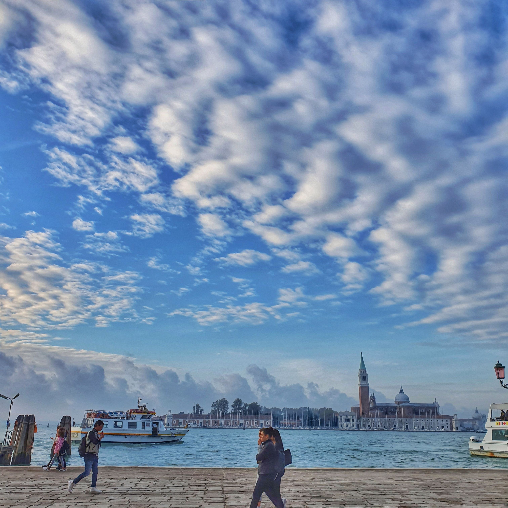
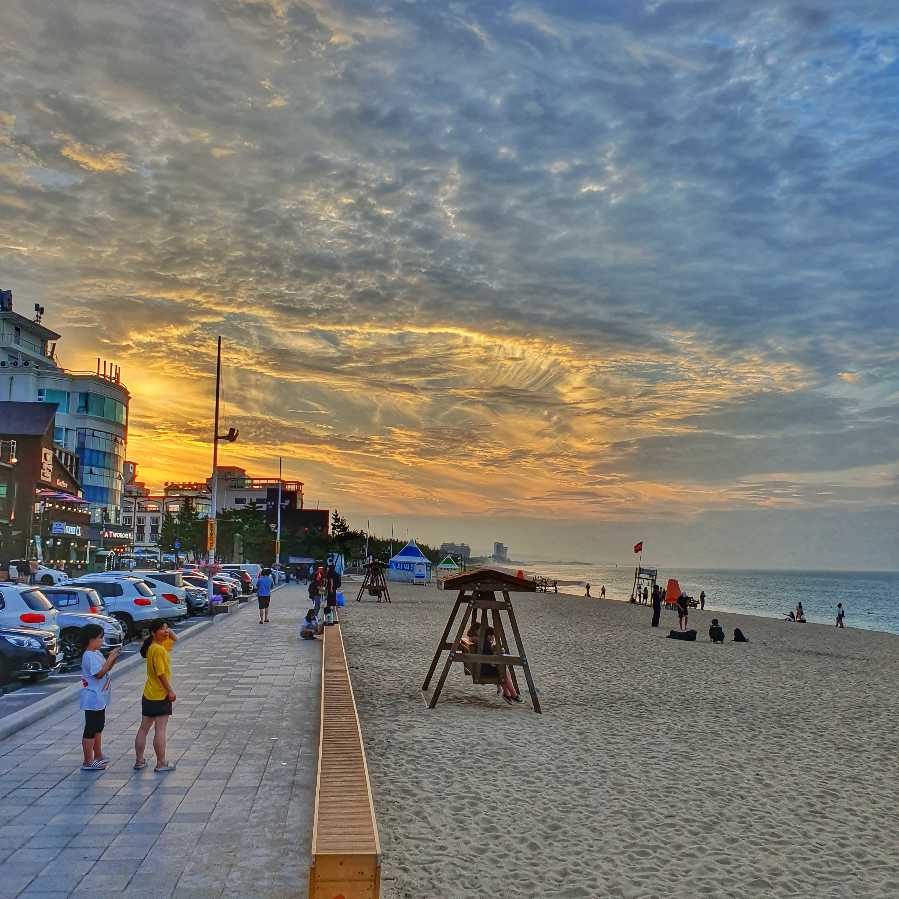

Minseok's Portfolio
HOME
WORKS
CONTACT
Italy
Switzerland
USA
Japan
Australia
Korea
Other Works
MY WORKS
This is a collection of moments capturing beautiful places from my travels across various countries
Each photo carries its own unique story and the emotions of that moment
These photos help me remember the beauty and emotions of those moments
Join me in my cherished moments
Italy
This is a photo of a beautiful boat I spotted while walking along the canal in Venice, Italy.
While shopping in Milan, I saw the Milan Cathedral and thought it was so beautiful that I had to take a picture. This cathedral is said to be one of the most iconic buildings in Italy.
A photo I took while riding a boat in Venice, Italy.
A river running between houses, with people traveling by boat, was a sight I don’t often see. It was a unique and memorable place for me.
Seeing the Leaning Tower of Pisa, which I had only seen in the media, was really amazing. The buildings next to it were so beautiful that I quickly took some photos.

The sky in Italy was as beautiful and full of clouds as the sky in Australia. Seeing the blue sky made me feel happy without even realizing it. When I look at this photo, those feelings come back to me.
When I think of Italy, the Colosseum immediately comes to mind. From a young age, seeing the Colosseum in many media, the word ‘amazing’ was the first thing that came to my mind when I saw it for the first time.
A typical street in Venice, Italy—it feels like a scene from a movie.
This is a photo taken near the famous Ponte Vecchio in Florence, Italy. It was a beautiful and peaceful place, and looking at this picture, I can remember everything from the clothes I wore to the food I ate. I think that’s exactly why I take photos.
It’s the place that made me truly realize I’m on a trip. It seems like Italy has so many beautiful buildings.
A beautiful photo taken in Orvieto, Italy. I remember hearing the distant sound of a piano while taking this picture, and it perfectly matched the scenery.
It’s the Trevi Fountain in Rome, Italy. I heard that if you toss a coin into the fountain twice, you'll visit Rome again, and if you toss it three times, you’ll find love. I remember tossing the coin twice.
A photo taken near the Basilica Cateriniana di San Domenico in Siena, Italy. There were many buildings that looked like they belonged in a movie, and I felt proud to capture such picturesque scenes.
A photo taken in a narrow street in Orvieto, Italy. I remember having some wine at that time, and I still remember its taste.
Switzerland
The hotel where I stayed for a day in Switzerland. Even the hotel in Switzerland was beautiful.
The Lion Monument in Lucerne, Switzerland. It was built in 1792 to honor the Swiss Guards who were killed during the French Revolution. Knowing its significance, the lion looked different to me.
A photo taken in Bern, the capital of Switzerland. It felt like a fairytale place, so I remember taking a lot of pictures there.
I took this photo on the streets of Lucerne, Switzerland. I was browsing for souvenirs and ended up snapping a shot because the street looked so beautiful.
This is a beautiful view of Bern, Switzerland. I remember feeling a bit disappointed because the weather was cloudy at the time.
This photo was taken on the way to the Matterhorn in Switzerland.
This is a place where we stopped for a short break while on a sightseeing bus tour in Switzerland. I'm not sure exactly where it was, but I took the photo right away because the view was so beautiful.
This is a beautiful river in Interlaken, Switzerland. The combination of the mountains, the river, and the clouds was stunning.
This is a beautiful bridge in Bern, Switzerland. I remember waiting nearby to see the bear that is said to bring good luck.
This photo was taken in Interlaken, Switzerland. I remember the sky being especially beautiful.
This is a statue of Freddie Mercury I saw in Switzerland. I was excited to see it because I’ve listened to a lot of Freddie Mercury’s songs.
This is Einstein's house in Switzerland. It felt fascinating, and I wanted to go inside and see it for myself.
USA
This photo was taken in Chicago, USA. The buildings were so impressive that it made me want to take pictures.
This is a photo I took in Chicago, USA, that looks like a scene from a movie. There were lots of buildings, people, and cars everywhere.
This photo was taken in downtown Chicago. The reflections of the buildings and sky in the glass were really beautiful.
This is a night view of Las Vegas, USA. I thought the bright lights of Las Vegas at night were really impressive.
This photo was taken from a hotel balcony in Hawaii. My first trip abroad was to Hawaii with my family. My uncle got married there, and we had such wonderful memories together, so Hawaii is truly a special place for me.
This photo of the ocean was taken in Honolulu, Hawaii. The blue sky and sea were really impressive.
This photo of many palm trees was taken in Honolulu, Hawaii. Looking at it makes me want to go on a vacation.
This is the Grand Canyon in the USA. It was a place that really made me feel like a small part of the world.
This is a photo I took in Honolulu, Hawaii. It was a day when the clouds looked really beautiful.
This is a photo of the beautiful night view in Chicago. It was an unforgettable sight, and I thought it was truly amazing.
Japan
This photo is from a trip to Japan that was even more fun because I was with my friends. I think it’s a heartwarming photo.
This photo was taken while exploring Asakusa, Japan. It was on the way to a Japanese Starbucks.
This photo was taken on the way out after eating ramen at a Japanese ramen restaurant in Asakusa, Japan.
This is a street in Asakusa, Japan. The weather was great that day, and it made me feel happy.
This is a photo of Mickey Mouse and friends at Tokyo Disneyland. I was amazed by the advanced technology in the rides there.
This photo was taken after eating okonomiyaki with my friends in Japan.
This photo was taken while waiting in line for a ride at Tokyo Disneyland. I like it because it reminds me of a photo taken in a rural home.
This photo shows a restaurant in Asakusa, Japan. I think it has a great Japanese atmosphere
This photo was taken while looking for a hotel in Asakusa, Japan, with friends.
This photo was taken at Tokyo Disneyland. Since I love Disney and Pixar movies, it was an incredibly fun day.
Australia
This is a beautiful view of Brisbane city taken while relaxing with a friend at Victoria Park after class.
This photo was taken on the day I had been in Australia for one week while travelling alone. It was a place where I felt Australia was beautiful
This was the first day I visited Brisbane City. Everything was so new and the buildings were beautiful, so I remember taking a lot of photos.
This photo was taken while exploring Brisbane City and admiring the buildings. I took it because it was so beautiful.
This was the first day I visited the Gold Coast. Since I had only been in Australia for a week, I went alone and just took photos.
It was a place that made me realize, 'I’m really in Australia.
About six months after arriving in Australia, I still thought the buildings were amazing and took photos of them.
This photo was taken while I was studying at the library. The view outside was so beautiful that I had to take a picture.
This photo was taken in front of King George Station. On my first day in Brisbane City, I thought that building was really impressive.
Seeing the kangaroo relaxing made me feel more relaxed as well.
Korea
This photo shows the streets of Gangnam, Seoul, taken after studying for the IELTS near Sinnonhyeon Station. I took it while relaxing outside.
This photo was taken during a trip to Jeju Island, while I was drinking coffee at a café. The beautiful view outside the window caught my attention.
When taking the subway in Seoul, you can see the beautiful Han River view as you pass through Ttukseom Station. I always looked out the window at this station.
These are beautiful palm trees that I took to Jeju Island, Korea. I really love Jeju. it's such a healing place.
This photo was taken in Pohang, Korea. I sometimes enjoy going to the countryside because the air is fresh and it's peaceful.
This is a photo of a beautiful restaurant in Gyeongju, taken during a family trip.
This is a photo of the sea in Jeju Island. The sunset was really impressive.
This is a beautiful sea view taken with a friend from a cafe on Jeju Island.

This is a photo of the beautiful sky in Gangneung, Korea.
This photo was taken at a cafe in Pohang. I remember this place being very peaceful.
This is a view of Gangnam, Seoul. There are a lot of buildings and cars. The weather was really nice that day.
Other Works
Still life
Still life
Still life
Still life
Abstraction
Abstraction
Abstraction
Abstraction
Portraiture
Portraiture
Portraiture